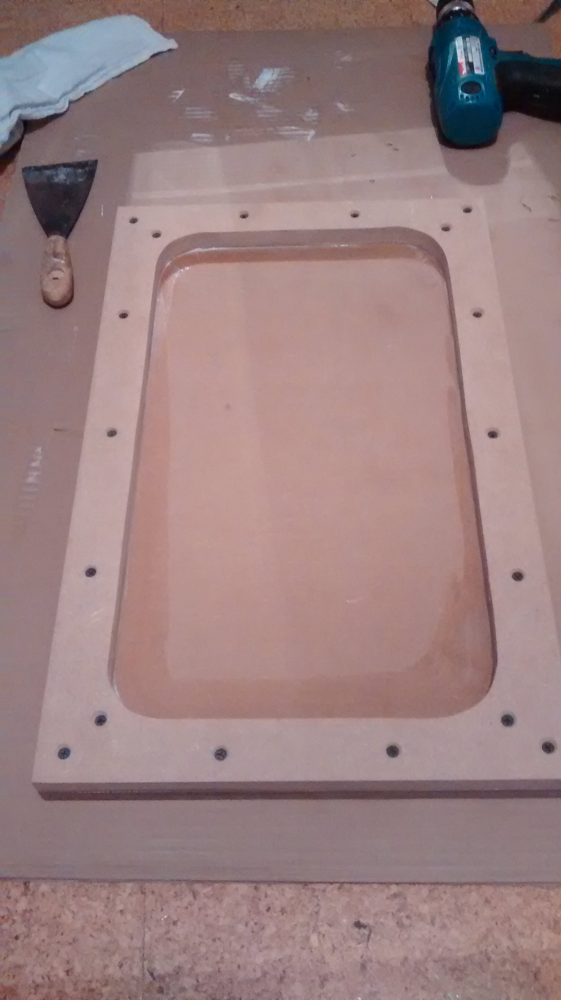

subwoofer
Schon seit einigen Jahren begleiten mich meine beiden Satelliten. Genauer gesagt zwei Stereo HiFi Boxen, die ich mir nach einem Bausatz von Akustik Art in Kiel zusammengestellt habe.
Bestehend aus dem Hochtöner Peerless XD 270F/4 und dem Tiefmitteltöner Tang Band W4-657.
Seit Jahren fehlt aber der dazugehörige Subwoofer, der in seinen Einzelteilen mit Aktivmodul und dem Lautsprecher im Regal lag.
Vorgabe für das Design war ein ungefähres Volumen von 50 Litern mit den Abmessungen: 500x400x240
Das ganze habe ich verändert zu 540x380x300 um ein proportionales Gehäuse zu erhalten, welches zusätzlich noch an den Seitenwänden verstrebt werden konnte, ohne an Volumen zu verlieren.
Laut Zeichnung habe ich also das Gehäuse zusammengesetzt, mit wasserfestem Ponal verleimt und mit 35mm Schnellbauschrauben für halt gesorgt. Bei allen Verschraubungen hat es sich empfohlen die Löcher in den 19mm MDF Platten vor zu bohren um ein ausreißen oder spalten der platten an den Kanten zu vermeiden. Ebenso wie die Löcher auf den Außenflächen von mir gesenkt wurden um die Schraubenköpfe beim Furnieren besser verstecken zu können.
In diesen Kasten kam dann noch eine Verstrebung für die großen Seitenwände, von denen eine, inklusive montierter Verstrebung, nachträglich eingesetzt wurde.
Leider hat sich die Platte dann so verkantet, dass ich die Säge Arbeiten vor der Seitenplatten Montage durchführen musste.
Nach der vollständigen Montage der Platten und ist der Rohkörper nun fertig und verrichtet seinen ersten Dienst.
Als aktiv Modul verwende ich das Mivoc AM80 und als Speaker den Tang Band W69-1042J, nicht unbedingt High-End Komponenten, aber für den Anfang ganz ausreichend.
Nun fehlt noch der letzte Schliff: Zu spachteln der gesenkten Löcher und die Außenflächen Furnieren.


